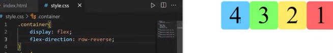
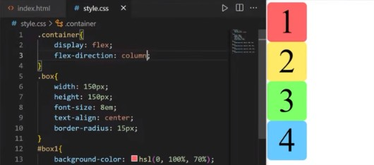
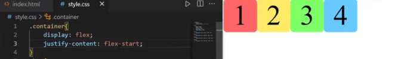

Row-reverse

Column

Column-reverse

Justify content
This setting will be the default.
This setting will take the boxes to the right.

This setting align the boxes to the center.

This setting align the boxes to the center.

The same as before, but it takes into account the space surronding the elements.
The same as before, but the space is even.
Css setup
Cross axis: the y-axis. It can be altered by using the align-items in the css document